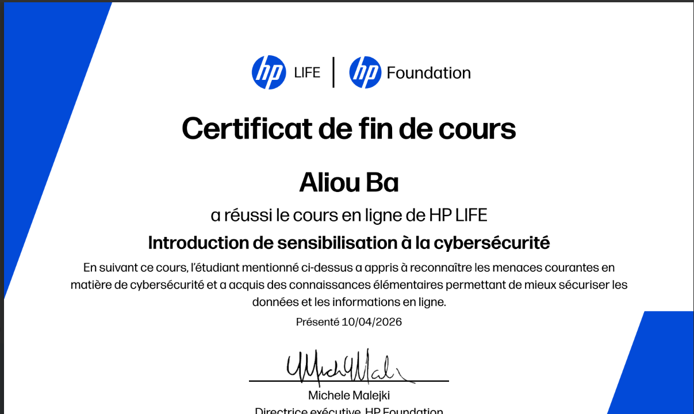
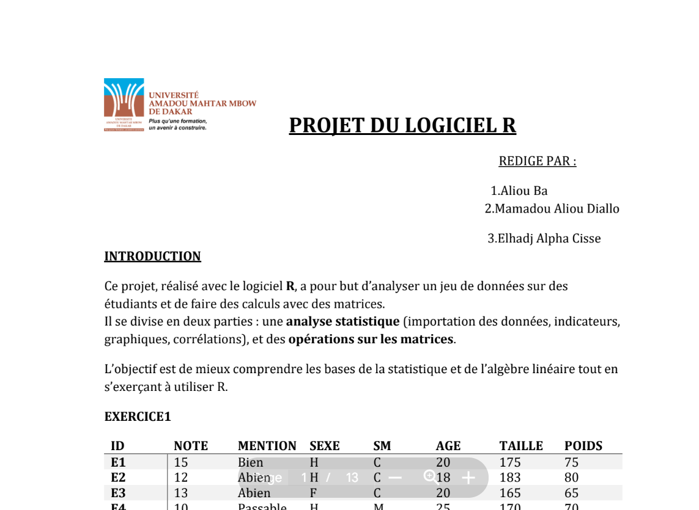
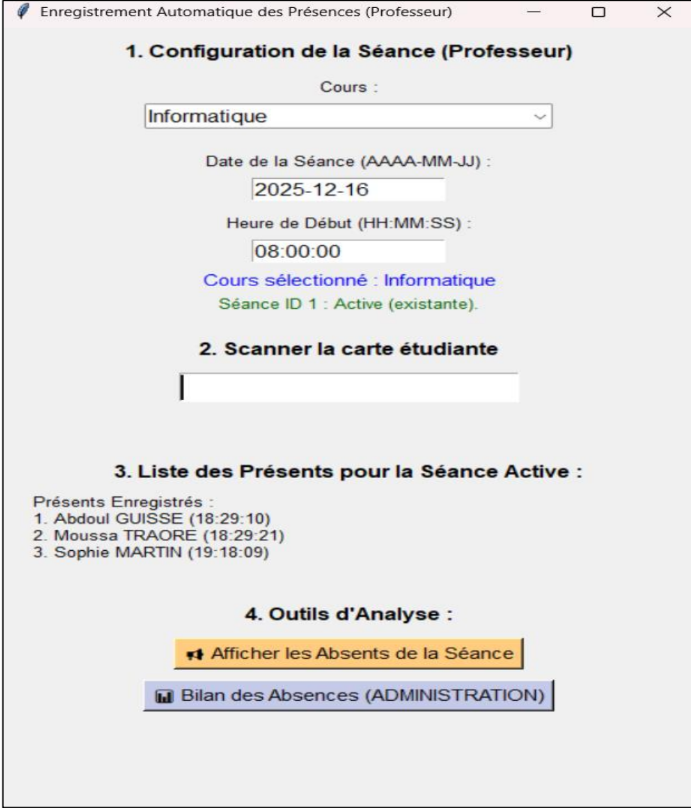
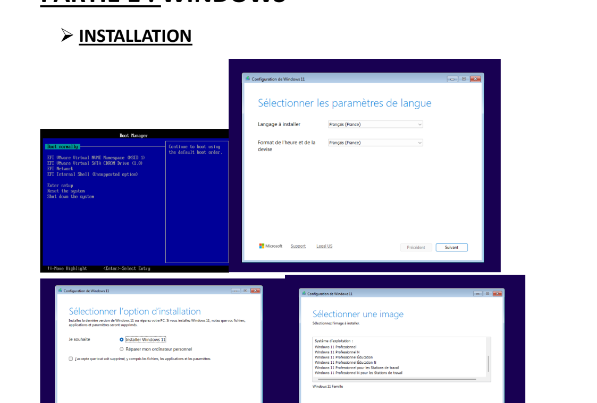
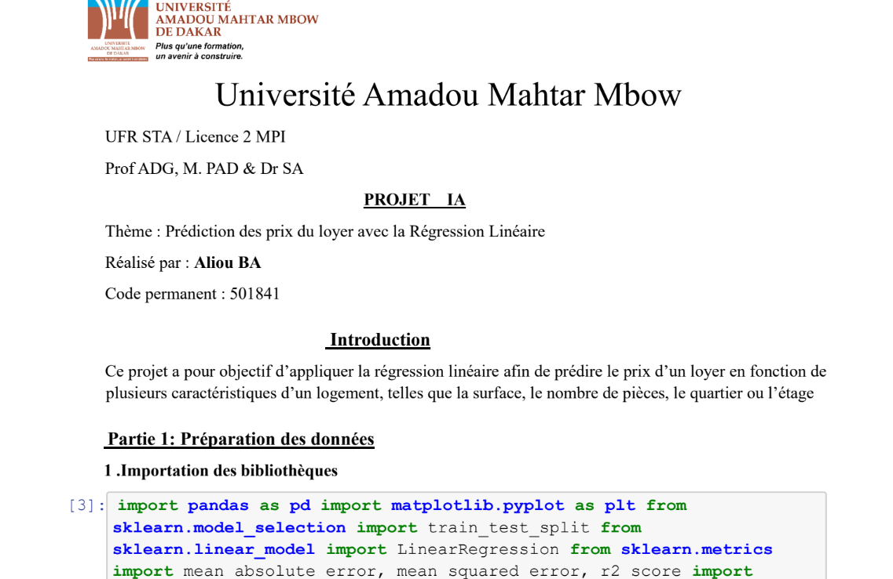
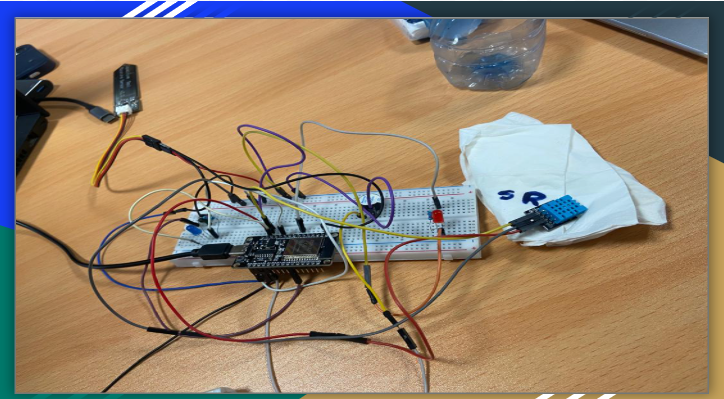

Mes projets & certificats
Voici une sélection de projets académiques et certificats obtenus dans le cadre de ma formation en informatique à l'UAM.

Introduction à la Cybersécurité
hpFoundation
Formation en ligne sur les bases de la cybersécurité : protection des données, menaces informatiques et bonnes pratiques numériques.

Langage R
UAM
Projet d'analyse statistique et de visualisation de données à l'aide du logiciel R.

Enregistrement automatique des étudiants
UAM
Système automatisé de gestion et d'enregistrement des étudiants, permettant de simplifier les démarches administratives au sein de l'université.

Windows / Ubuntu
UAM
Installation et manipulation des commandes système sur Windows et Ubuntu : gestion des fichiers, des processus en ligne de commande.
UniHelp
UAM
Plateforme d'entraide entre étudiants permettant de poser des questions, partager des ressources pédagogiques et collaborer sur des exercices académiques.

Prédiction du prix d'un loyer
UAM
Modèle de machine learning entraîné pour prédire le prix d'un loyer à partir de critères comme la superficie, la localisation et le nombre de pièces.

Système d'arrosage automatique
UAM
Conception d'un prototype IoT avec Arduino pour automatiser l'arrosage des plantes selon le taux d'humidité du sol détecté par un capteur en temps réel.
Aliou Ba
UAM — L3 Informatique
Étudiant passionné par l'informatique, le développement web et l'intelligence artificielle. Toujours à la recherche de nouveaux défis et opportunités.